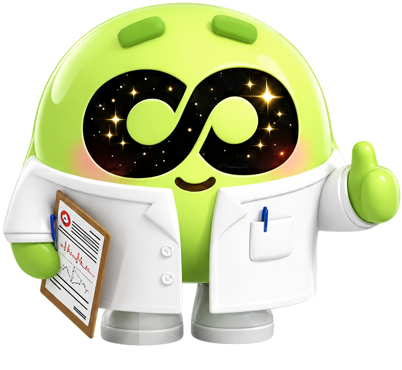
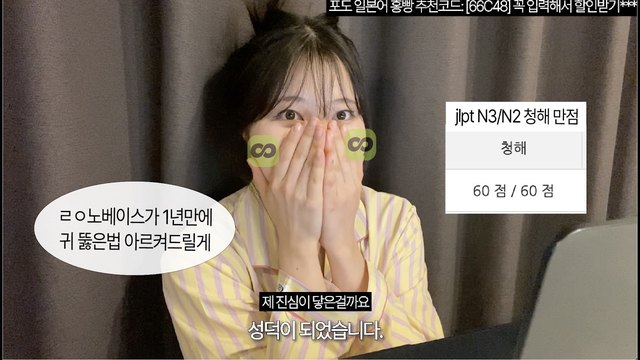
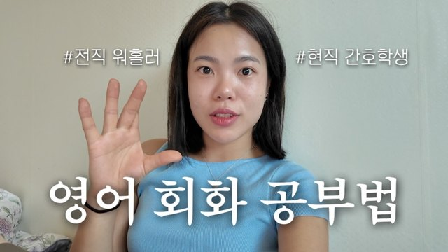
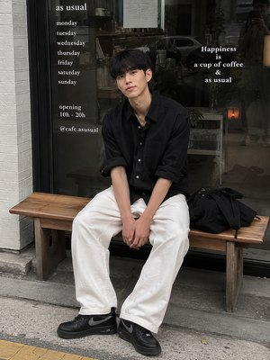

初級
첫인사 (はじめまして！)
저랑 가볍게 인사해 볼까요?私と軽くあいさつしてみましょうか？
ニーズ把握
あなたのことを教えてください。答えに合わせて、最後のプランが変わります。
学ぶきっかけ (학습동기)
왜 한국어를 배우고 싶어요? 여러 개 골라도 돼요.どうして韓国語を学びたいですか？
いくつ選んでも大丈夫です。
ゴール (목표)
한국어로 뭘 할 수 있게 되고 싶어요? 하나만 골라 주세요.韓国語で何ができるようになりたいですか？
1つだけ選んでください。
学習ペース (학습 페이스)
일주일에 수업을 몇 번 받고 싶어요?1週間に何回、
レッスンを受けたいですか？

체험 레슨チェホム レスン体験レッスン
ここから25分。終わるころには、韓国語で自己紹介ができて、相手のことも聞けます。約束します！
오늘의 목표 (今日のゴール)
오늘 수업이 끝나면, 이렇게 자기소개를 할 수 있어요.今日の授業が終わると、こんなふうに自己紹介ができるようになります。
이미 아는 단어 (もう知っている単語)
사실 오늘 쓸 단어, 이미 알고 있어요. 한국어 단어의 70%가 한자에서 왔거든요. 어순도 조사도 일본어랑 거의 같아요.実は今日使う単語、もう知っています。韓国語の単語の70%が漢字から来ているんです。語順も助詞も日本語とほぼ同じです。
N이에요 / 예요N イエヨ / エヨ
Nです。まずは「私は〜です」が言えるようにします。
오늘의 패턴 (今日のパターン)
이름도, 직업도, 나라도 이렇게 말해요. 제가 읽을게요. 잘 듣고 따라 읽어 보세요.名前も、仕事も、国も、こう言います。私が読みます。よく聞いて、まねして読んでみましょう。
같이 읽어요 (一緒に読もう)
이번엔 혼자 읽어 보세요. 네 문장이에요.今度はひとりで読んでみましょう。4つの文です。
이에요와 예요 (이에요 と 예요、どっち？)
단어의 마지막 글자를 봐 주세요. 받침이 있으면 이에요, 없으면 예요를 붙여요.単語の最後の文字を見てください。パッチムがあれば이에요、なければ예요をつけます。
알맞은 말 고르기 (正しい言葉を選ぼう)
단어의 마지막 글자를 보고, 맞는 쪽을 눌러 보세요.単語の最後の文字を見て、正しいほうをタップしてください。
질문 패턴 (質問のパターン)
두 개를 이어서 읽을게요. 글자는 똑같아요. 끝소리만 들어 보세요.2つを続けて読みます。文字は同じです。最後の音だけ聞いてみてください。
질문 읽기 (質問を読もう)
이번엔 혼자 읽어 보세요. 끝을 올려서요.今度はひとりで読んでみましょう。最後を上げて。
문장 만들기 (文を組み立てよう)
단어를 순서대로 놓고, 소리 내어 말해 보세요.単語を順番に並べて、声に出して言ってみましょう。
빈칸을 채워요 (空欄をうめよう)
빈칸에 들어갈 말을 넣어서, 문장을 통째로 소리 내어 말해 보세요.空欄に入ることばを入れて、文をまるごと声に出して言ってみましょう。
한국어로 바꿔요 (韓国語にしよう)
일본어를 보고, 한국어로 말해 보세요.日本語を見て、韓国語で言ってみましょう。
내 문장 만들기 (自分の文を作ろう)
이번엔 진짜 자기 이야기예요. 자기소개를 한 문장으로 말해 보세요.今度は本当に自分の話です。自己紹介を1つの文で言ってみましょう。
은/는ウン / ヌン
〜は。話のテーマを決める助詞で、日本語と同じ場所に入ります。
오늘의 패턴 (今日のパターン)
일본어 'は'하고 자리도 뜻도 같아요. 제가 읽을게요. 잘 듣고 따라 읽어 보세요.日本語の「は」と、位置も意味も同じです。私が読みます。よく聞いて、まねして読んでみましょう。
같이 읽어요 (一緒に読もう)
이번엔 혼자 읽어 보세요. 네 문장이에요.今度はひとりで読んでみましょう。4つの文です。
은과 는 (은 と 는、どっち？)
아까 그 받침 규칙, 여기서도 똑같아요. 받침이 있으면 은, 없으면 는이에요.さっきのパッチムのルール、ここでも同じです。パッチムがあれば은、なければ는です。
은과 는 고르기 (은 と 는 を選ぼう)
은과 는 중에서 맞는 쪽을 눌러 보세요.「은」と「는」から正しいほうをタップしてください。
문장 만들기 (文を組み立てよう)
단어를 순서대로 놓고, 소리 내어 말해 보세요.単語を順番に並べて、声に出して言ってみましょう。
빈칸을 채워요 (空欄をうめよう)
빈칸에 들어갈 말을 넣어서, 문장을 통째로 소리 내어 말해 보세요.空欄に入ることばを入れて、文をまるごと声に出して言ってみましょう。
한국어로 바꿔요 (韓国語にしよう)
일본어를 보고, 한국어로 말해 보세요.日本語を見て、韓国語で言ってみましょう。
내 질문 만들기 (自分の質問を作ろう)
저한테 하고 싶은 질문을 하나 말해 보세요.私に聞いてみたい質問を1つ言ってみましょう。
자기소개해요!チャギソゲヘヨ！
2つのパターンがそろいました。ここからは本当の自己紹介です。
대화 읽기 (会話を読もう)
제가 하나 쪽을 읽을게요. 하루카가 되어서 읽어 보세요.私がハナのほうを読みます。ハルカになって読んでみましょう。
대화 채우기 (会話をうめよう)
이번엔 하루카 대사가 비어 있어요. 하루카가 되어서 문장을 소리 내어 말해 보세요.今度はハルカのセリフが空いています。ハルカになって、文を声に出して言ってみましょう。
자유 대화 (フリートーク)
이번엔 진짜 이야기예요. 자기소개를 하고, 저한테도 물어봐 주세요.今度は本当の話です。自己紹介をして、私にも聞いてみてください。
한국 여행 (韓国旅行)
보너스! 한국 게스트하우스에서 처음 만난 사람이에요. 빈칸 대사를 말해 주세요.ボーナス！韓国のゲストハウスで初めて会った人です。空欄のセリフを言ってください。
원어민 팁 (ネイティブのひとこと)
실제 대화에서는 이렇게 말하기도 해요. 서로 아는 이야기면 저는, 씨는을 자주 빼요.実際の会話では、こんなふうにも言います。おたがい分かっている話では「저는」「〜씨는」をよく省略します。
오늘의 결과 (今日の成果)
25분 전엔 한 문장도 못 만들었는데, 지금은 이만큼 말할 수 있어요.25分前は1つの文も作れなかったのに、今はこれだけ言えます。
レポート＆プラン
今日の授業で確認した現在の実力と、
目標までの道のりを合わせてお見せしますね。

포도님의 한국어 실력,
꼼꼼하게 진단했어요.
—・체험 레슨・25분
내 레벨
Lv.1/ 10
한글을 하나씩 읽어요


TOPIK 1급—
오늘 수업에서 학생이 어땠나요?
항목별 진단포도 수강생 평균과 나란히 놓고 봤어요
정확성문법과 말끝이 어땠나요?
어휘쓸 수 있는 단어가 얼마나 되던가요?
유창성말이 얼마나 이어졌나요?
발음학생 말을 알아듣기 어땠나요?
듣기제 말을 알아듣게 하려고 얼마나 늦췄나요?
다섯 항목을 다 봤어요. 위를 눌러 다시 고칠 수 있어요.


 잘하고 있어요!
잘하고 있어요!
 아쉬워요!
아쉬워요!
✦체험레슨 코멘트
 —
— 약
약 


PODO 안내
Day1Company
포도스피킹은 코스닥에 상장된 에듀테크 기업 데이원컴퍼니가 운영하는 외국어 교육 서비스예요.
한국 정식 런칭 2년+만에,
이렇게 많은 분들이 사랑해주셨어요.
취미부터 워홀, 유학, 취업 준비까지
포도로 올커버 & 멤버분들이 직접 증명한 후기들
일본어 후기
 “워홀 준비생이라면 필독”
TOKYO자두네유튜브 12.7만
“워홀 준비생이라면 필독”
TOKYO자두네유튜브 12.7만
 “4개국어 능력자의 추천 레슨”
한캄커플유튜브 8.69만
“4개국어 능력자의 추천 레슨”
한캄커플유튜브 8.69만
 “일본어 전문 6만 유튜버의 찐후기”
해날이 ヘナリ유튜브 6.39만
“일본어 전문 6만 유튜버의 찐후기”
해날이 ヘナリ유튜브 6.39만

“히라가나도 몰랐던 노베이스가 JLPT 청해 만점” 홍빵유튜브 1만 “초보자였는데 워홀 1트 합격 후기”
지이’s 스케치
“초보자였는데 워홀 1트 합격 후기”
지이’s 스케치
 “독학러, 3개월 만에 입이 트였어요”
프로 독학러 후기
“독학러, 3개월 만에 입이 트였어요”
프로 독학러 후기
 “여행 가기 전에 무조건 이거!”
센샤루 senn’sharu
“여행 가기 전에 무조건 이거!”
센샤루 senn’sharu
영어 후기
 “승무원 취준생·워홀러 주목! 가성비 대박”
워니밸리인스타 5.9만
“승무원 취준생·워홀러 주목! 가성비 대박”
워니밸리인스타 5.9만
 “호주 4년차 유학생이 오픽 공부법으로 추천”
지혜DAISY유튜브 1.02만
“호주 4년차 유학생이 오픽 공부법으로 추천”
지혜DAISY유튜브 1.02만
 “해외 영업 직장인의 찐 회화 후기”
메메유튜브 2.7천
“해외 영업 직장인의 찐 회화 후기”
메메유튜브 2.7천

“현직 간호생의 글로벌 영어회화 공부법” 보탱귤유튜브 1.79천한국에서 일본어·영어를 배우신 분들의 후기입니다.
포도 수업
진짜 한국어 회화 실력을 만드는
나만의 1:1 맞춤 학습 4가지
예약도 취소도
1시간 전까지
오전 6시부터 밤 12시까지 수업이 열려 있어요. 갑자기 시간이 비면 지금 바로 예약하고, 일이 생기면 1시간 전에 취소하면 돼요. 내 일정에 맞게 편하게 레슨 받으세요.
오늘 1:1레슨이 사라지지 않고 남아요.
나만의 한국어 진단 리포트
오늘 레슨에서 확인한 지금 레벨 진단부터 강점과 약점을 분석해 앞으로 어디부터 시작할지 정리해서 한번 더 알려드릴게요.
커리큘럼
한글부터 프리토킹까지 체계적인 회화맞춤 학습설계
11레슨이면 모든 글자를 읽을 수 있습니다.
복잡해 보였던 한글을 이해하기 쉽게 알 수 있도록 자체 설계했습니다.
문법, 문장을 통째로 외우지 마세요.
자연스럽게 익히고 배울 수 있도록 합니다.
패턴을 통해 문법을 배우고, 어휘력은 함께 늘어납니다.
교과서에서만 배우는 ‘입니다’만 배우지 않아요.
상대에 따라 달라지는 현지 말투까지 알려드려요.
상대가 누구냐에 따라 골라 써요. 교과서 말투만 쓰면 어색해집니다.
내 관심사에 맞게 주제를 골라서, 그 안에서 진짜로 쓰는 대사로 배워요.
 케이팝40레슨
제 최애는 민지예요.A는 B예요
케이팝40레슨
제 최애는 민지예요.A는 B예요
 반말 수다40레슨
너 지금 어디 가는 거야?~는 거야?
반말 수다40레슨
너 지금 어디 가는 거야?~는 거야?
매주 최신화되는 토픽으로
한국인 튜터와 친구처럼 수다도
떨 수 있죠!원하는 주제를 골라 1:1 대화를 나눠보세요.
신규 토픽들+
요즘 핫한 간장게장, 한국인은 다 좋아할까?
튜터
좋아하는 이야기를 같이 할 수 있는 한국인 튜터를, 매일 만날 수 있어요.
매일 1레슨이면, 일주일에 7번



마음 맞는 한 분을 계속 만나셔도 좋고, 매일 다른 튜터와 이야기하셔도 좋아요. 같은 주제도 사람이 바뀌면 다른 이야기가 나오거든요.
관심사 별로 골라서
좋아하는 걸로 배우고 싶은 분
가서 직접 말해보고 싶은 분
허지혜 선생님 강석준 선생님
강석준 선생님한글부터 시작하는 분
 송하윤 선생님
송하윤 선생님 김진석 선생님
김진석 선생님일과 실무에서 쓰는 분
박태현 선생님레벨과 관심사에 맞춰 자동으로 매칭돼요. 매번 신청하지 않으셔도 됩니다.
마음에 드는 튜터가 생기면 튜터 지정권으로 계속 그 분과 수업하실 수 있어요.
수강료
회원님에게 가장 합리적인 수강권을 안내드릴게요.
—까지
체험레슨을 마치신 오늘부터 3일 동안
첫달 50%할인 혜택을 받을 수 있어요.
※ 입회금 · 교재비 · 예약금 전부 0엔
¥12,700→¥6,350(세금 포함)
3일이 지나면 반값혜택이 사라집니다.
*2번째 결제 부터는 월 ¥12,700 자동 결제
※ 8일 전 유료 레슨을 수강하지 않으면, 전액 환불 가능합니다.
※ 유료 플랜 이용 개시 후, 같은 플랜 계약을 2번 자동 갱신 받는 것이 조건입니다
정규 수강권 혜택 한 눈에 보기
입회금 · 교재비 · 예약금은 0엔이에요. 내시는 건 월 요금뿐입니다.
회차권은 하루에 여러 번도 들으실 수 있어요. 평일이 어려우시고 주말에 시간 내서 하실 분께는 월 8레슨도 좋습니다.
※ 첫 결제로부터 8일 이내이고 유료 레슨을 한 번도 듣지 않으셨다면 전액 환불해 드립니다.
※ 첫 달 반값 특전은 1개월 플랜에만 적용돼요. 3개월 갱신 플랜은 대상이 아니에요.
자유롭게 플랜을 변경하세요.
수강 개월부터 학습 언어까지, 내 마음대로 변경.
다음 수강 결제일 7일 전까지, 편히 말씀만 주시면 됩니다.
전체 요금표
레슨권 전체예요. 표시된 금액은 월 수강료 입니다.
| 레슨권 | 기간 | 한국어 | 한국어&영어 |
|---|---|---|---|
| 매일 1레슨하루 1회 | 1개월 | ¥12,700 | ¥15,000 |
| 3개월 | ¥11,400 | ¥13,500 | |
| 월 8레슨하루 여러 번 OK | 1개월 | ¥10,400 | ¥12,700 |
| 3개월 | ¥9,334 | ¥11,400 |
더블팩은 한국어와 영어를 자유롭게 골라 듣는 레슨권이에요.
월 8레슨은 하루에 여러 번 들으실 수 있어요. 주말에 몰아서 들으셔도 됩니다. 매일 1레슨은 하루 한 번까지예요.
3개월은 3개월분을 한 번에 결제하고 3개월마다 갱신돼요. 7일까지 쉬어 갈 수 있어요.
첫 달 반값 특전은 1개월 플랜에만 적용돼요. 3개월은 대상이 아니에요.
자주 묻는 질문
이후 추가 문의사항은 “원톡 채팅상담”도 가능합니다.
오늘 고생 많으셨어요! ❤️
체험레슨은
여기까지예요!
오늘 긴 시간 함께 이야기 나눠 주셔서 즐거웠어요.
다음에는 더 편하게, 더 많이 말하게 되실 거예요 ;)
잠시 뒤 원톡으로도 한 번 더 알려 드릴게요.